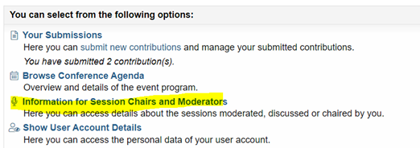

Guideline for session chairs
You have agreed to be a chair of a session ISCB46 - many thanks for that! In this document we summarize answers to some common questions and further instructions.
Before the conference
- You will find the session you are assigned to in conftool. Please log in with your registration details to check them. You will see all speakers and abstracts of the assigned sessions in this overview. You can also check the conference program on the conference website:
 - Each session has a chair and a supporter from the local organizing committee (LOC).
- You can reach out to the speakers in advance to ask if they want to suggest one or two questions for their presentation to help with preparing the Q&A.
At the conference
- Try to verify before your session that all speakers actually are at the conference (speakers are instructed to reach out to chairs prior to the session).
- Arrive at the room at least 10 minutes before the start of the session so that you can check with our technical support person for any issues or outstanding items.
- Introduce yourself to the speakers and the LOC supporter. Make sure that they are all aware of the session flow, including the order in which the presentations take place.
- Double-check with the speakers how questions are asked and answered in the session. In most cases, the Q&A will follow directly after the presentation. Each speaker has 15 minutes excluding Q&A (approx. 3 minutes), and the total allocated 18 minutes include change-over. Invited, topic-contributed and featured sessions might have different rules.
- Double-check with the speakers how they want to be reminded about the timing during their talks. It is usually easiest to sit at the front and raise your hand to do this.
- Please make sure that mics are used by the speakers and the audience if available.
- It might be necessary to repeat questions from the audience and from virtual participants if the room setup does not allow interaction. Our technical support team will inform you about the setup.
During the Session
- Describe the structure of the session (presentations followed by Q&A, panel discussion, Q&A at the end, etc.) as needed.
- Mention the mic-set-up for Q&A.
- Introduce the speakers (name and affiliation) before their presentation.
- Time the speakers to make sure that the session time is spent fairly. If needed, remind the speakers to finish if they get close to the end of their allotted time.
- Once the speakers have finished their talk, stand up and invite the audience to ask questions, if time allows. If the time slot for the presentation (15 minutes) and questions is exhausted (usually after 18 minutes, which also include change-over to next speaker), no further questions should be allowed. Liaise with your LOC supporter regarding the virtual participants. If there are no questions from the audience ask one to start the discussion.
- At the end of the session, thank all speakers and the audience.
FAQs
For more general questions please refer to the FAQs.